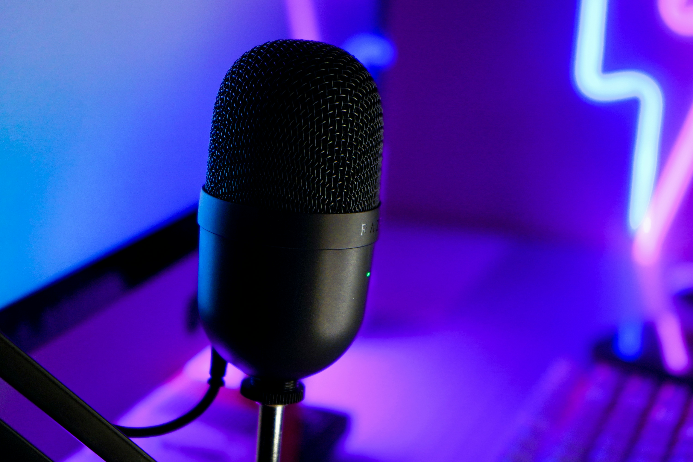

Sound quality, clarity, pros/cons, specs, and whether it’s worth your money.
The Shure SM7B remains the most iconic streaming and broadcasting microphone in 2026. Known for its warm, rich, professional vocal tone, it delivers unmatched clarity and noise rejection — making it the go‑to mic for creators, podcasters, and competitive gamers who want studio‑grade sound.
Most gaming mics pick up room noise or sound overly processed. The SM7B uses Shure’s legendary dynamic cartridge — the same technology used in professional radio studios — giving your voice depth, smoothness, and natural warmth while blocking out keyboard clicks, fans, and background noise.
With a near‑perfect rating, creators praise its warm tone, unmatched noise isolation, and professional sound quality. The only critique is that it requires an interface or booster — but the results are worth it for anyone serious about audio.
| Feature | Details |
|---|---|
| Type | Dynamic |
| Connectivity | XLR |
| Polar Pattern | Cardioid |
| Frequency Response | 50Hz – 20kHz |
| Weight | 765g |
| Requires Interface? | Yes (recommended: Cloudlifter or GoXLR) |
The Shure MV7 is the definitive gaming and streaming microphone of 2026. Its combination of clarity, noise rejection, and hybrid connectivity makes it unbeatable for creators who want professional sound without complicated gear.
Upgrade your voice with the most reliable gaming microphone of 2026.
Check Price on Amazon